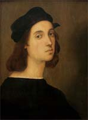
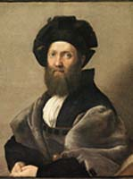

 Во второй половине 1508 года Рафаэль переезжает в Рим (там он проведёт всю оставшуюся жизнь) и становится при содействии Браманте официальным художником папского двора. Ему поручено расписать фресками Станцу делла Сеньятура. Для этой станцы Рафаэль пишет фрески, отражающие четыре вида интеллектуальной деятельности человека: богословие, юриспруденцию, поэзию и философию — «Диспута» (1508—1509), «Мудрость, Умеренность и Сила» (1511), и самые выдающиеся «Парнас» (1509—1510) и «Афинскую школу» (1510—1511).
 Помимо большого количества картин на религиозные темы, Рафаэль создаёт и портреты. В 1512 году Рафаэль пишет «Портрет папы Юлия II». «В это же время, пользуясь уже величайшей известностью, он написал маслом портрет папы Юлия, настолько живой и похожий, что при одном виде портрета люди трепетали, как при живом папе.»[5] По заказам папского окружения были написаны «Портрет кардинала Алессандро Фарнезе» (около 1512), «Портрет Льва X с кардиналами Джулио Медичи и Луиджи Росси» (около 1517—1518). Особо выделяется «Портрет Бальдассара Кастильоне» (1514—1515). Спустя много лет этот портрет будет копировать Рубенс, Рембрандт сначала зарисует его, а затем под впечатлением от этой картины создаст свой «Автопортрет». Отвлёкшись от работы в станцах, Рафаэль пишет «Портрет Биндо Альтовити» (около 1515).